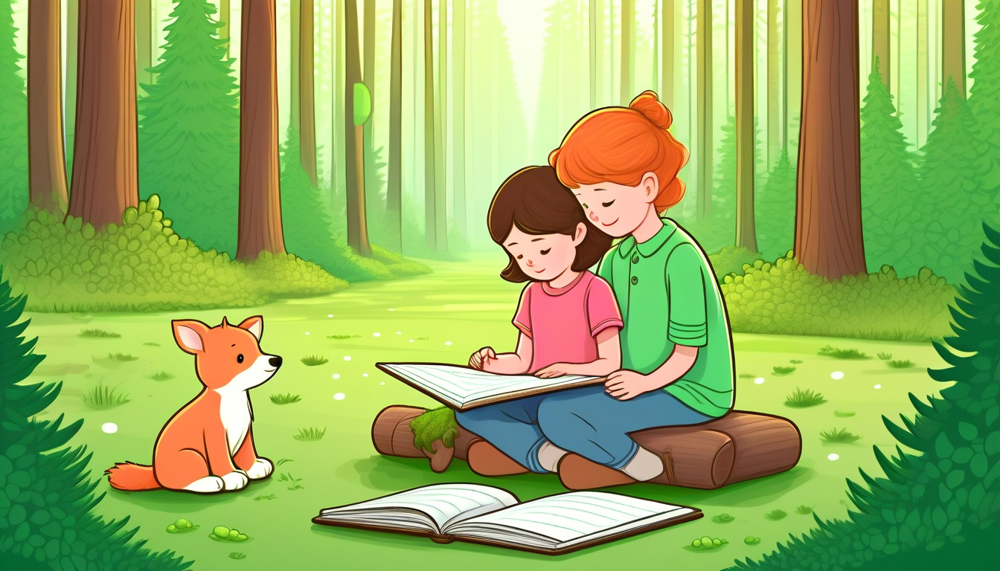

Sixteen clipboard cards help writers keep one fictional paragraph focused with a main idea, two useful details, a linking sentence, one cut extra, and a final copied paragraph.
Audience: Families, homeschool groups, tutors, and adult-led writing tables for writers ages 6-11.
Format: 16 printable paragraph focus cards plus adult guide tools, paragraph focus routines, take-home paragraph slips, and optional prompts
Family-safe printable writing pages for adult-led, offline story practice.
$71
Included
16 printable clipboard paragraph focus cards
Adult setup guide
Fictional paragraph focus safety notes
Clipboard paragraph coaching moves
Family handoff notes
Pack reset notes
Six adult-led paragraph focus routines
Ten take-home paragraph slips
Eight optional prompts
Provider-ready PDF and ZIP artifact
Adult guide
Story paragraph-focus coaching
Clipboard Story Paragraph Focus Adult Guide
Print the clipboard paragraph focus cards, blank paragraph frames, and guide pages before the adult-led paper session.
Begin with one fictional paragraph plan, then coach a main idea, two useful details, detail order, one linking sentence, one cut idea, and a final focused copy.
Keep every example made-up, broad, printable, offline, paper-only, and guided by an adult.
Use small paper slips so the writer can move details before copying the final paragraph.
Replace narrow real facts with invented names, broad story places, and pretend objects before writing begins.
End each activity by copying one focused fictional paragraph that keeps one main idea and two helpful details.
Use one clipboard story paragraph-focus card at a time. Keep every choice broad, invented, paper-only, and screen-free.
World menu
Sixteen paragraph-focus-card worlds
Pick a world image, then shape one fictional paragraph with a pretend clipboard story paragraph-focus card.
Ages 6-8
Moon Muffin Market
Ages 6-8
Puddle Planet Post Office
Ages 7-9
Buttonwood Library Train
Ages 7-9
Button Bakery Map Mix-Up
Ages 7-8
Teacup Town Weather Window
Ages 7-9
Pocket Park Notice Board
Ages 7-9
Spoon Ferry Lunchbox Harbor
Ages 7-9
Acorn Avenue Errand Office
Ages 8-10
Seed Library Map Room
Ages 8-10
Rain Gauge Railway

Ages 8-10
Moss Message Observatory
Ages 8-10
Tidepool Timekeepers Lab
Ages 10-11
Revision River Ferry
Ages 10-11
Clue Label Tower Museum
Ages 10-11
Compass Craft Academy
Ages 10-11
Binding Day Boardwalk
Story paragraph-focus routines
Choose the clipboard paragraph-focus routine
Main Idea Clip
Choosing the one idea a fictional paragraph will stay about.
The adult places one blank paragraph frame on the clipboard strip and writes the story topic: ____________________.
The writer states the one main idea the paragraph should prove or show: ____________________.
The adult asks which words in the main idea must guide every sentence: ____________________.
The writer copies the main idea line at the top of the paragraph frame: ____________________.
Detail Pair Sort
Choosing two useful details and leaving out loose ideas.
The adult writes four invented detail notes on small paper slips: ____________________.
The writer chooses two details that clearly support the main idea: ____________________.
The adult asks which other detail is interesting but belongs outside this paragraph: ____________________.
The writer places the detail pair under the main idea line: ____________________.
Detail Order Lineup
Putting two useful details in the clearest order.
The adult sets the two chosen details side by side below the main idea: ____________________.
The writer numbers the detail that should come first and the detail that should come second: ____________________.
The adult asks why that order will help the reader follow the pretend moment: ____________________.
The writer copies the ordered detail notes in the paragraph frame: ____________________.
Linking Sentence Bridge
Adding one sentence that connects the main idea to the details.
The adult points from the main idea to the first detail and asks for one linking sentence: ____________________.
The writer drafts a linking sentence that connects the main idea to detail one: ____________________.
The adult asks whether the sentence points back to the same paragraph focus: ____________________.
The writer writes the linking sentence before the two detail lines: ____________________.
Extra Idea Lift
Cutting one interesting idea that pulls the paragraph away from its focus.
The adult marks one sentence or note that wanders away from the main idea: ____________________.
The writer explains why that extra idea can wait for another paper page: ____________________.
The adult asks which word or detail should stay after the extra idea comes out: ____________________.
The writer rewrites the paragraph plan with the extra idea removed: ____________________.
Final Focus Copy
Copying one focused fictional paragraph after the plan is clean.
The adult reads the paragraph plan in order: main idea, linking sentence, detail one, detail two: ____________________.
The writer checks that every sentence supports the same focus: ____________________.
The adult asks if one word should move, change, or come out before final copying: ____________________.
The writer copies the final focused fictional paragraph on a fresh sheet: ____________________.
Take-home paragraph slips
Try one focused paragraph later
one paper pass | main idea
Main Idea Slip
Write the one main idea this fictional paragraph will stay about: ____________________.
Ask what every sentence should point back to: ____________________.
two-note pass | two useful details
Two Useful Details Slip
List two useful invented details that support the main idea: ____________________.
Ask which two details help the reader understand the same idea: ____________________.
lineup pass | detail order
Detail Order Slip
Number the two details in the order the paragraph should use them: ____________________.
Ask why the first detail should come before the second: ____________________.
linking line pass | linking sentence
Linking Sentence Slip
Write one linking sentence between the main idea and the first detail: ____________________.
Ask how the linking sentence keeps the paragraph focused: ____________________.
cut-and-copy pass | cut one extra idea
Extra Idea Slip
Find one interesting extra idea that does not belong in this paragraph: ____________________.
Ask where that idea could wait on another blank paper page: ____________________.
quiet check pass | focus check
Focus Check Slip
Check each sentence and mark yes if it supports the main idea: ____________________.
Ask which sentence most clearly proves the paragraph focus: ____________________.
single frame pass | opening line from main idea
Opening Line Slip
Turn the main idea into a clear opening line for one fictional paragraph: ____________________.
Ask whether the opening line tells the reader what to expect: ____________________.
detail pair pass | detail pair sentences
Detail Pair Slip
Write the detail pair as two separate sentences that support one focus: ____________________.
Ask whether both detail sentences belong under the same main idea: ____________________.
final copy pass | final focused paragraph
Final Focus Copy Slip
Copy the final focused paragraph after one extra idea has been removed: ____________________.
Ask what changed from the loose plan to the final paragraph: ____________________.
calm polish pass | small focus polish
Paragraph Polish Slip
Move, change, or remove one word so the final paragraph reads more smoothly: ____________________.
Ask which small change made the paragraph easier to follow: ____________________.
Optional share prompts
Optional adult-led offline prompt: the main idea for this paragraph is ____________________.
Optional adult-led offline prompt: detail one that supports the main idea is ____________________.
Optional adult-led offline prompt: detail two that supports the main idea is ____________________.
Optional adult-led offline prompt: the detail that should come first is ____________________.
Optional adult-led offline prompt: the linking sentence that holds the paragraph together is ____________________.
Optional adult-led offline prompt: the extra idea I will cut is ____________________.
Optional adult-led offline prompt: the sentence that best keeps the focus is ____________________.
Optional adult-led offline prompt: the final focused fictional paragraph is ____________________.
Story Paragraph Focus Card 1 | Ages 6-8 | choose one main idea, keep two useful details, and remove one extra idea
Moon Muffin Clipboard Counter Paragraph
Moon Muffin Market
Adult setup: Adult: Place this card on a clipboard with blank paper and choose one pretend market moment to focus on: ____________________.
Writer: Keep the paragraph about one moon muffin idea, then choose two details that help it: ____________________.
Main idea
Main idea: The paragraph is mostly about one glowing muffin tray at the counter: ____________________.
Detail one
Useful detail one: Add one detail about the tray, wrapper, or tiny paper label: ____________________.
Detail two
Useful detail two: Add one detail about what the helper notices beside the tray: ____________________.
Detail order
Detail order: Choose which useful detail should come first so the paragraph is easy to follow: ____________________.
Linking sentence
Linking sentence: Write one sentence that connects both details back to the glowing muffin tray: ____________________.
Cut extra
Cut extra idea: Cross out one fun idea that does not help this muffin-tray paragraph: ____________________.
Final paragraph
Final focused paragraph: Copy the main idea, two useful details, linking sentence, and no extra idea: ____________________.
Quiet option: Point to the main idea and write only the two useful details first: ____________________. Later paper line: Try another focused paragraph about a moon crumb card or silver wrapper: ____________________.
Story Paragraph Focus Card 2 | Ages 6-8 | stay with one puddle post idea and support it with two clear details
Puddle Planet Clipboard Ripple Note
Puddle Planet Post Office
Adult setup: Adult: Set the card beside blank paper and offer one invented ripple note or shell slot moment: ____________________.
Writer: Make the paragraph about one ripple note, then choose two details that belong with it: ____________________.
Main idea
Main idea: The paragraph is mostly about a ripple note arriving at the shell slot: ____________________.
Detail one
Useful detail one: Add one detail about the note shape, stamp wobble, or wet-looking edge: ____________________.
Detail two
Useful detail two: Add one detail about the puddle post helper sorting the note: ____________________.
Detail order
Detail order: Decide whether the note detail or helper detail should come first: ____________________.
Linking sentence
Linking sentence: Write one sentence that shows how both details help the ripple note idea: ____________________.
Cut extra
Cut extra idea: Cross out one extra puddle idea that pulls the paragraph away from the note: ____________________.
Final paragraph
Final focused paragraph: Copy one main idea, two useful details, one linking sentence, and no extra idea: ____________________.
Quiet option: Circle the ripple note first, then write two matching details: ____________________. Later paper line: Try another focused paragraph about a shell slot or ripple stamp: ____________________.
Story Paragraph Focus Card 3 | Ages 7-9 | build one paragraph around a clear train-ticket main idea with ordered support
Buttonwood Clipboard Library Train Ticket
Buttonwood Library Train
Adult setup: Adult: Place this card on a clipboard and choose one invented ticket, shelf tag, or station-card moment: ____________________.
Writer: Keep the paragraph about one ticket clue and use two details that prove why it matters: ____________________.
Main idea
Main idea: The paragraph is mostly about a ticket clue changing the library train stop: ____________________.
Detail one
Useful detail one: Add one detail about the ticket mark, folded edge, or color strip: ____________________.
Detail two
Useful detail two: Add one detail about the traveler noticing the shelf tag or station card: ____________________.
Detail order
Detail order: Put the detail that explains the ticket clue before the detail that shows the next action: ____________________.
Linking sentence
Linking sentence: Write one sentence that connects the ticket clue to the traveler action: ____________________.
Cut extra
Cut extra idea: Cross out one train-side idea that sounds fun but does not support the ticket clue: ____________________.
Final paragraph
Final focused paragraph: Copy the ticket main idea, two ordered details, linking sentence, and no extra idea: ____________________.
Quiet option: Underline the ticket clue, then list two details before copying the paragraph: ____________________. Later paper line: Try another focused paragraph about a bookmark strip or shelf tag: ____________________.
Story Paragraph Focus Card 4 | Ages 7-9 | keep a map-table paragraph focused by choosing details that solve one mix-up
Button Bakery Clipboard Map Table Paragraph
Button Bakery Map Mix-Up
Adult setup: Adult: Set this card beside blank paper and keep every map-table mark pretend before the writer begins: ____________________.
Writer: Focus on one bakery map-table mix-up, then choose two useful details that explain it: ____________________.
Main idea
Main idea: The paragraph is mostly about a crumb map getting mixed up on the map table: ____________________.
Detail one
Useful detail one: Add one detail about the crumb dot, button marker, or ribbon path: ____________________.
Detail two
Useful detail two: Add one detail about how the map mender spots the mix-up: ____________________.
Detail order
Detail order: Choose whether the map mark or the map mender action should appear first: ____________________.
Linking sentence
Linking sentence: Write one sentence that ties both details to the crumb-map mix-up: ____________________.
Cut extra
Cut extra idea: Cross out one bakery idea that does not explain the map-table mix-up: ____________________.
Final paragraph
Final focused paragraph: Copy one main idea, two useful details in order, one linking sentence, and no extra idea: ____________________.
Quiet option: Box the map-table main idea before writing two supporting details: ____________________. Later paper line: Try another focused paragraph about a button marker or ribbon path: ____________________.
Story Paragraph Focus Card 5 | Ages 7-8 | write one weather-window paragraph with a clear main idea and two matching details
Teacup Town Clipboard Weather Window Paragraph
Teacup Town Weather Window
Adult setup: Adult: Place this card on a clipboard and choose one invented cloud tag, cup sill, or forecast strip clue: ____________________.
Writer: Make the paragraph about one weather-window clue and keep only details that help it: ____________________.
Main idea
Main idea: The paragraph is mostly about a cloud tag changing the view at the weather window: ____________________.
Detail one
Useful detail one: Add one detail about the cloud tag shape, swirl, or paper color: ____________________.
Detail two
Useful detail two: Add one detail about what the tiny watcher does near the cup sill: ____________________.
Detail order
Detail order: Decide which detail helps the reader picture the weather-window clue first: ____________________.
Linking sentence
Linking sentence: Write one sentence that connects the cloud tag detail and watcher detail: ____________________.
Cut extra
Cut extra idea: Cross out one Teacup Town idea that does not help the cloud-tag paragraph: ____________________.
Final paragraph
Final focused paragraph: Copy the main idea, two useful details, linking sentence, and no extra idea: ____________________.
Quiet option: Draw a tiny box for the main idea, then write two details under it: ____________________. Later paper line: Try another focused paragraph about a forecast strip or cup-sill card: ____________________.
Story Paragraph Focus Card 6 | Ages 7-9 | focus one notice-board paragraph by linking two details to the same main idea
Pocket Park Clipboard Notice Board Paragraph
Pocket Park Notice Board
Adult setup: Adult: Set the card beside blank paper and choose one invented leaf notice or board-edge moment: ____________________.
Writer: Keep the paragraph about one notice-board idea and remove anything that wanders away: ____________________.
Main idea
Main idea: The paragraph is mostly about a leaf notice changing the pocket park board: ____________________.
Detail one
Useful detail one: Add one detail about the notice corner, leaf stamp, or dotted border: ____________________.
Detail two
Useful detail two: Add one detail about the keeper smoothing, sorting, or pointing to the notice: ____________________.
Detail order
Detail order: Place the notice detail and keeper detail in the order that makes the paragraph clearest: ____________________.
Linking sentence
Linking sentence: Write one sentence that links both details back to the leaf notice: ____________________.
Cut extra
Cut extra idea: Cross out one pocket park idea that does not belong in this notice-board paragraph: ____________________.
Final paragraph
Final focused paragraph: Copy one main idea, two useful details, one linking sentence, and no extra idea: ____________________.
Quiet option: Mark the leaf-notice main idea, then write only the two useful details: ____________________. Later paper line: Try another focused paragraph about a bench label or paper station: ____________________.
Story Paragraph Focus Card 7 | Ages 7-9 | state one ferry main idea and keep two details on that idea
Adult setup: Adult: print this card and choose a pretend spoon ferry, lid dock, or harbor tray label before writing begins: ____________________.
Writer: make one main idea, add two useful ferry details, cut one extra idea, and copy a focused paragraph: ____________________.
Main idea
Main idea: write what this paragraph will mostly tell about the spoon ferry: ____________________.
Detail one
Detail 1: add one useful detail about the ferry job or pretend cargo: ____________________.
Detail two
Detail 2: add one useful detail about the lid dock, napkin pier, or harbor tray: ____________________.
Detail order
Detail order: number the two details 1 and 2 so the paragraph moves clearly: ____________________.
Linking sentence
Linking sentence: write one sentence that connects the main idea to both ferry details: ____________________.
Cut extra
Cut extra idea: cross out one idea that belongs in another paragraph, such as a sky chart or railway card: ____________________.
Final paragraph
Final paragraph: copy one focused paragraph with the main idea, two details, and linking sentence: ____________________.
Quiet option: fill the main idea and one detail first, then add the second detail if ready: ____________________. Take-home line: make a new spoon ferry paragraph with one main idea and two useful details: ____________________.
Story Paragraph Focus Card 8 | Ages 7-9 | keep an acorn errand paragraph centered on one counter task
Acorn Avenue Errand Counter Paragraph Focus Card
Acorn Avenue Errand Office
Adult setup: Adult: print this card and choose a pretend acorn slip, twig tray, or seed stamp for the counter task: ____________________.
Writer: name the main counter idea, add two useful acorn details, choose their order, and trim one extra idea: ____________________.
Main idea
Main idea: write what the paragraph will mostly tell about the acorn errand counter: ____________________.
Detail one
Detail 1: add one useful detail about the acorn slip, twig tray, or seed stamp: ____________________.
Detail two
Detail 2: add one useful detail about how the leaf helper finishes the counter task: ____________________.
Detail order
Detail order: decide whether the object detail or action detail should come first: ____________________.
Linking sentence
Linking sentence: write one sentence that ties the counter task to both acorn details: ____________________.
Cut extra
Cut extra idea: cross out one fun idea that does not help this acorn counter paragraph: ____________________.
Final paragraph
Final paragraph: copy one focused acorn paragraph with the main idea, two details, and linking sentence: ____________________.
Quiet option: circle the main idea and write just the two best acorn details: ____________________. Take-home line: build another acorn errand paragraph around one counter task and two useful details: ____________________.
Story Paragraph Focus Card 9 | Ages 8-10 | separate the map table main idea from side details
Seed Library Map Table Paragraph Focus Card
Seed Library Map Room
Adult setup: Adult: print this card and choose a pretend seed card, folded map, or shelf label for the map table: ____________________.
Writer: draft one map table main idea, support it with two useful details, and remove one side idea: ____________________.
Main idea
Main idea: write what this paragraph will mostly explain about the seed library map table: ____________________.
Detail one
Detail 1: add one useful detail about the seed card, folded map, or shelf label: ____________________.
Detail two
Detail 2: add one useful detail about how the map table helps the seed keeper choose a place on the pretend map: ____________________.
Detail order
Detail order: put the detail that explains the map table first, then the detail that shows what changes: ____________________.
Linking sentence
Linking sentence: write one sentence that connects the main idea to both map table details: ____________________.
Cut extra
Cut extra idea: cross out one detail that belongs to a rain railway card or moss message dome instead: ____________________.
Final paragraph
Final paragraph: copy one focused seed library paragraph with the main idea, two details, and linking sentence: ____________________.
Quiet option: write the main idea, then list only the two details that stay on that idea: ____________________. Take-home line: make a new map table paragraph with one main idea, two details, and one extra idea cut away: ____________________.
Story Paragraph Focus Card 10 | Ages 8-10 | choose detail order for a rain railway paragraph
Rain Gauge Railway Paragraph Focus Card
Rain Gauge Railway
Adult setup: Adult: print this card and choose a pretend gauge bead, rail label, or platform flag for the railway card: ____________________.
Writer: keep the paragraph about one rain railway idea, add two useful details, and cut one unrelated detail: ____________________.
Main idea
Main idea: write what this paragraph will mostly show about the rain gauge railway: ____________________.
Detail one
Detail 1: add one useful detail about the gauge bead, rail label, or platform flag: ____________________.
Detail two
Detail 2: add one useful detail about how the pretend railway action changes the card: ____________________.
Detail order
Detail order: choose whether the gauge detail or railway action detail should come first: ____________________.
Linking sentence
Linking sentence: write one sentence that links the main railway idea to both details: ____________________.
Cut extra
Cut extra idea: cross out one idea that belongs to an acorn counter or harbor tray paragraph instead: ____________________.
Final paragraph
Final paragraph: copy one focused rain railway paragraph with a main idea, two details, and linking sentence: ____________________.
Quiet option: number the two railway details, then copy only the final focused paragraph: ____________________. Take-home line: write another rain railway paragraph by keeping one main idea and cutting one extra idea: ____________________.
Story Paragraph Focus Card 11 | Ages 8-10 | link one message dome main idea to two supporting details
Moss Message Dome Paragraph Focus Card
Moss Message Observatory
Adult setup: Adult: print this card and choose a pretend moss note, pebble lens, or sky chart for the message dome: ____________________.
Writer: write one message dome main idea, add two useful details, choose their order, and copy the final paragraph: ____________________.
Main idea
Main idea: write what the paragraph will mostly tell about the moss message dome: ____________________.
Detail one
Detail 1: add one useful detail about the moss note, pebble lens, or sky chart: ____________________.
Detail two
Detail 2: add one useful detail about what the sky watcher understands from the message: ____________________.
Detail order
Detail order: place the clue detail before the understanding detail, or explain why the order should switch: ____________________.
Linking sentence
Linking sentence: write one sentence that connects the main message idea to both details: ____________________.
Cut extra
Cut extra idea: cross out one seed map, ferry, or counter detail that pulls the paragraph away from the message dome: ____________________.
Final paragraph
Final paragraph: copy one focused moss message paragraph with a main idea, two details, and linking sentence: ____________________.
Quiet option: write the main idea and two clue details before copying the full paragraph: ____________________. Take-home line: make another message dome paragraph with one main idea, two useful details, and one extra idea cut: ____________________.
Story Paragraph Focus Card 12 | Ages 8-10 | keep one paragraph focused on one tidepool main idea
Tidepool Timekeepers Table Focus Card
Tidepool Timekeepers Lab
Adult setup: Adult: place this card beside blank paper and name one gentle timekeeper table idea for the paragraph: ____________________.
Writer: make one focused paragraph with a main idea, two useful details, one linking sentence, and one crossed-out extra idea: ____________________.
Main idea
Main idea: write what the timekeeper table is helping the tidepool helper notice: ____________________.
Detail one
Detail 1: add one useful detail about a shell marker, pool bead, or tiny tide dial: ____________________.
Detail two
Detail 2: add one more detail that still fits the same tidepool main idea: ____________________.
Detail order
Detail order: choose which detail should come first so the paragraph is easy to follow: ____________________.
Linking sentence
Linking sentence: write one sentence that ties both details back to the tidepool main idea: ____________________.
Cut extra
Cut extra idea: cross out one tidepool idea that wanders away from this paragraph: ____________________.
Final paragraph
Final paragraph: copy one focused paragraph with the main idea, two ordered details, one linking sentence, and no extra idea: ____________________.
Quiet option: write the main idea and circle the two details that belong with it: ____________________. Carry-on line: make a new tidepool paragraph that keeps every sentence on one main idea: ____________________.
Story Paragraph Focus Card 13 | Ages 10-11 | trim a paragraph so every sentence supports one ferry idea
Revision River Ferry Focus Card
Revision River Ferry
Adult setup: Adult: set this card beside blank paper and offer one invented ferry idea, such as a folded notice or a draft paddle: ____________________.
Writer: choose one ferry main idea, add two details that support it, link them, and remove one side idea: ____________________.
Main idea
Main idea: write the one ferry idea the paragraph should carry from start to finish: ____________________.
Detail one
Detail 1: write one useful ferry detail about the paper dock, folded notice, or draft paddle: ____________________.
Detail two
Detail 2: write a second detail that supports the same ferry main idea without starting a new topic: ____________________.
Detail order
Detail order: decide whether the paper dock detail or the draft paddle detail should come first: ____________________.
Linking sentence
Linking sentence: write one sentence that shows how the two ferry details work together: ____________________.
Cut extra
Cut extra idea: cross out one side idea that would pull the paragraph away from the ferry main idea: ____________________.
Final paragraph
Final paragraph: copy the focused ferry paragraph with one main idea, two ordered details, one linking sentence, and the extra idea removed: ____________________.
Quiet option: underline the main idea and put a small mark beside the two matching details: ____________________. Carry-on line: revise another ferry paragraph so each sentence carries the same idea: ____________________.
Story Paragraph Focus Card 14 | Ages 10-11 | use clue labels to keep a paragraph on one point
Clue Label Tower Focus Card
Clue Label Tower Museum
Adult setup: Adult: place this card beside blank paper and choose one invented label tower clue for the writer to explain: ____________________.
Writer: explain one label tower clue in a focused paragraph with two useful details and one extra idea cut away: ____________________.
Main idea
Main idea: write the one point the label tower clue should prove: ____________________.
Detail one
Detail 1: add one useful clue detail about a tag shelf, pointer strip, or folded label: ____________________.
Detail two
Detail 2: add a second clue detail that helps prove the same main idea: ____________________.
Detail order
Detail order: choose the clue detail that should appear first so the paragraph makes sense: ____________________.
Linking sentence
Linking sentence: write one sentence that connects both clue details to the main idea: ____________________.
Cut extra
Cut extra idea: cross out one label tower idea that is interesting but not needed for this paragraph: ____________________.
Final paragraph
Final paragraph: copy the focused label tower paragraph with one point, two ordered clue details, one linking sentence, and no extra idea: ____________________.
Quiet option: list three clue details, then cross out the one that does not fit: ____________________. Carry-on line: write a new label tower paragraph where every clue detail supports one point: ____________________.
Story Paragraph Focus Card 15 | Ages 10-11 | keep craft directions focused inside one paragraph
Compass Craft Counter Focus Card
Compass Craft Academy
Adult setup: Adult: set this card beside blank paper and name one simple craft counter idea, such as a paper needle or bead marker: ____________________.
Writer: keep the compass craft paragraph on one main idea, choose two fitting details, and cut one wandering detail: ____________________.
Main idea
Main idea: write what the craft counter helper is trying to make clear about the compass piece: ____________________.
Detail one
Detail 1: add one useful detail about the paper needle, fold guide, or bead marker: ____________________.
Detail two
Detail 2: add one more detail that helps explain the same compass craft idea: ____________________.
Detail order
Detail order: decide which craft detail should come first so the paragraph moves clearly: ____________________.
Linking sentence
Linking sentence: write one sentence that connects the details back to the compass craft main idea: ____________________.
Cut extra
Cut extra idea: cross out one craft counter idea that starts a different paragraph: ____________________.
Final paragraph
Final paragraph: copy the focused compass craft paragraph with the main idea, two ordered details, one linking sentence, and no wandering detail: ____________________.
Quiet option: write the main idea, then number the two details in the order you will use: ____________________. Carry-on line: make another compass craft paragraph with one clear main idea and two useful details: ____________________.
Story Paragraph Focus Card 16 | Ages 10-11 | copy a final paragraph after cutting one extra idea
Binding Day Boardwalk Focus Card
Binding Day Boardwalk
Adult setup: Adult: place this card beside blank paper and choose one binding board idea, such as a page clasp or thread loop: ____________________.
Writer: plan one focused boardwalk paragraph, put two details in order, add one linking sentence, and copy the final version: ____________________.
Main idea
Main idea: write the one binding board idea the final paragraph should explain: ____________________.
Detail one
Detail 1: add one useful detail about a page clasp, thread loop, or booklet rail: ____________________.
Detail two
Detail 2: add a second detail that belongs with the same binding board main idea: ____________________.
Detail order
Detail order: choose which detail should come first before copying the final paragraph: ____________________.
Linking sentence
Linking sentence: write one sentence that ties the two boardwalk details back to the main idea: ____________________.
Cut extra
Cut extra idea: cross out one boardwalk idea that would make the paragraph lose focus: ____________________.
Final paragraph
Final paragraph: copy the final focused boardwalk paragraph with one main idea, two ordered details, one linking sentence, and the extra idea left out: ____________________.
Quiet option: box the main idea and copy only the two details that support it: ____________________. Carry-on line: finish a new binding board paragraph by cutting one extra idea before copying it: ____________________.